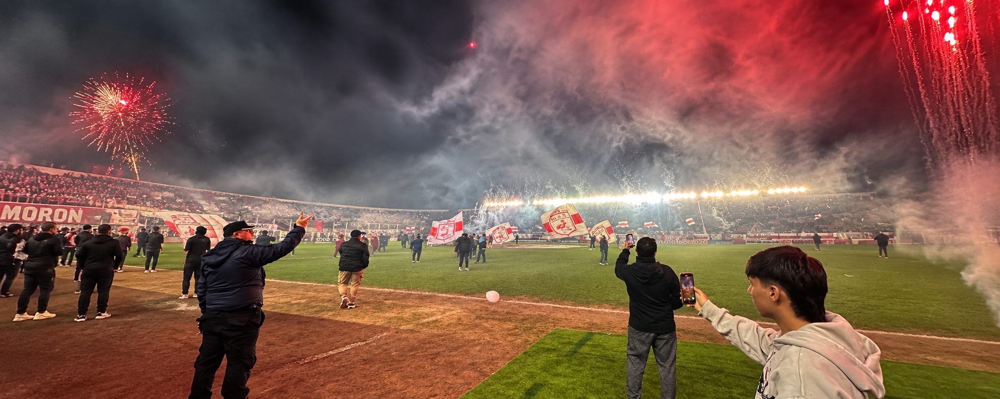
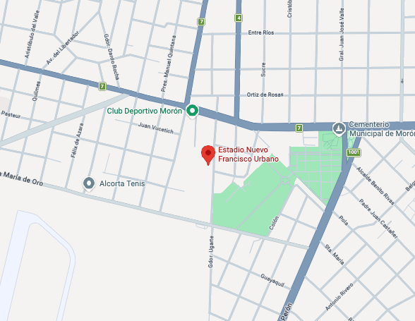
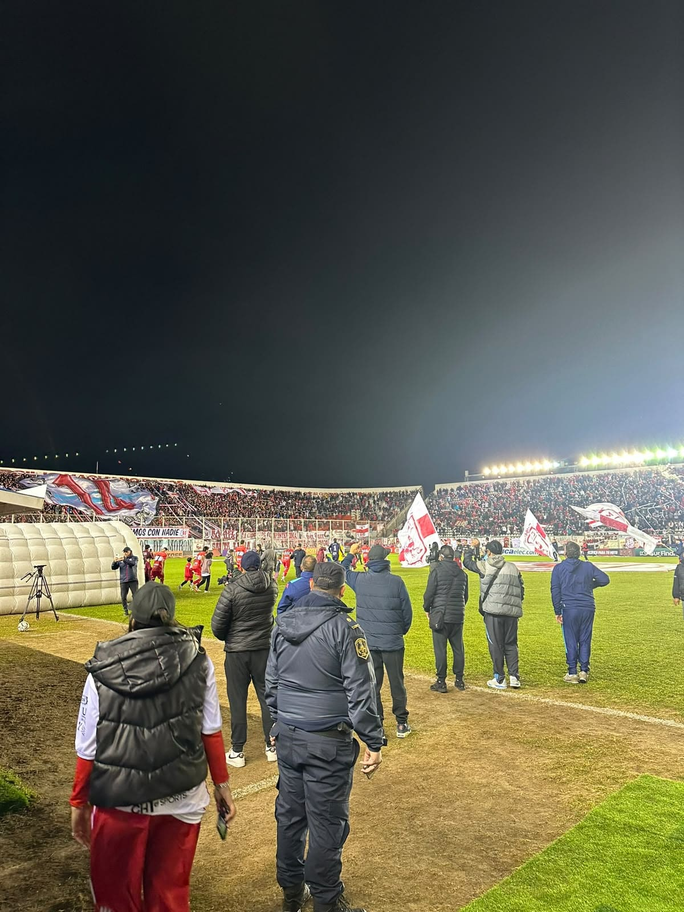
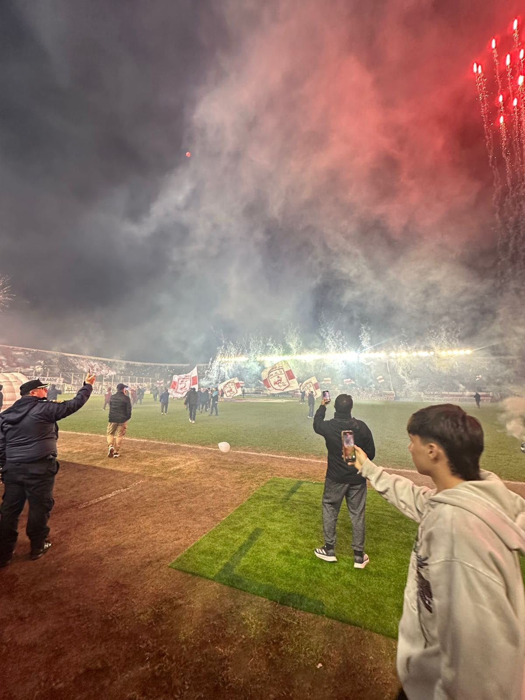
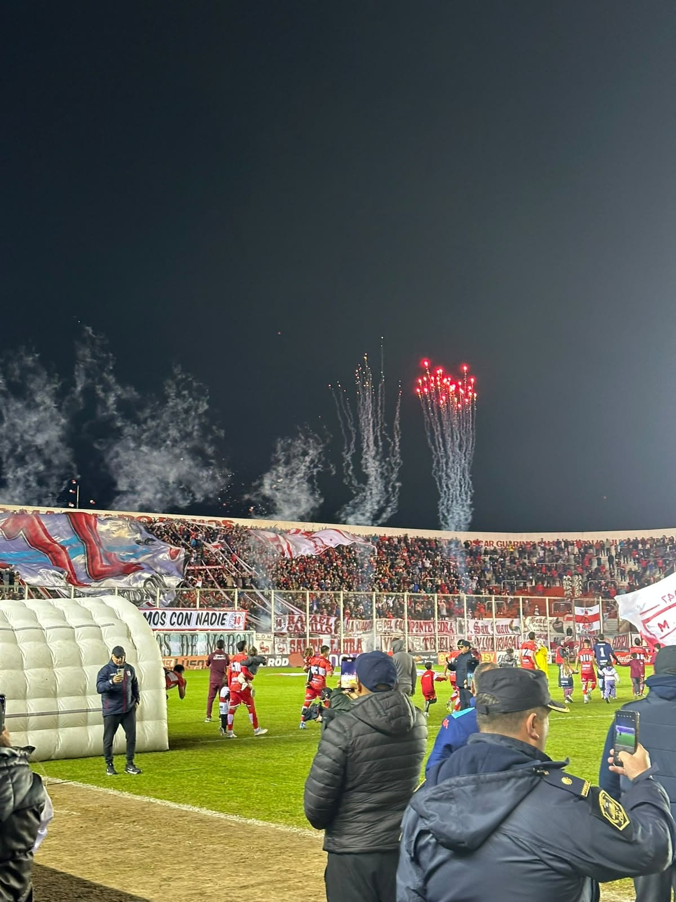

Sobre la cancha
El Estadio Francisco Urbano es mucho más que la casa del Deportivo Morón: es un lugar donde se
encuentran la historia, el barrio y la pasión por el fútbol. Sus tribunas guardan recuerdos de
generaciones de hinchas que hicieron de esta cancha un símbolo de identidad para toda la
comunidad.
Visitarla es encontrarse con una cancha que se vive de cerca, donde cada bandera, cada canto y
cada
rincón transmite el sentimiento de pertenecer a un club. En cada partido, el estadio vuelve a
cobrar
vida y demuestra que el fútbol también se construye fuera de la cancha, en las historias y
emociones de
quienes la sienten como propia.
Contexto de imagenes
Morón 0 — San Martín de Tucumán 0 Una noche de playoff que quedó en el recuerdo. El Francisco Urbano fue escenario del encuentro entre Deportivo Morón y San Martín de Tucumán por los playoffs del torneo. El partido terminó 0-0, en un encuentro intenso y muy disputado, donde cada pelota se jugó como si fuera la última. A pesar de no haber goles, la noche tuvo todos los condimentos de una jornada decisiva: tribunas llenas, banderas, fuegos artificiales y una hinchada que acompañó al equipo durante los 90 minutos. El empate le alcanzó a Deportivo Morón para avanzar de ronda gracias a la ventaja deportiva, convirtiendo el final del partido en una verdadera celebración dentro del Francisco Urbano. Una de esas noches en las que entendés que una cancha no se trata solamente de lo que pasa dentro del campo, sino también de todo lo que se vive alrededor.
Ubicacion Geografica

Galeria de imagenes tomadas



